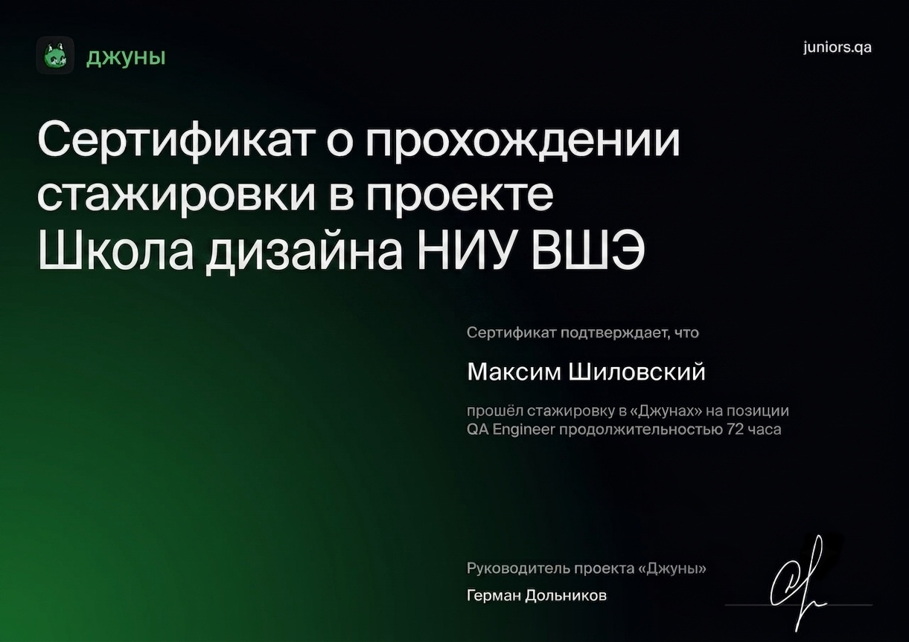
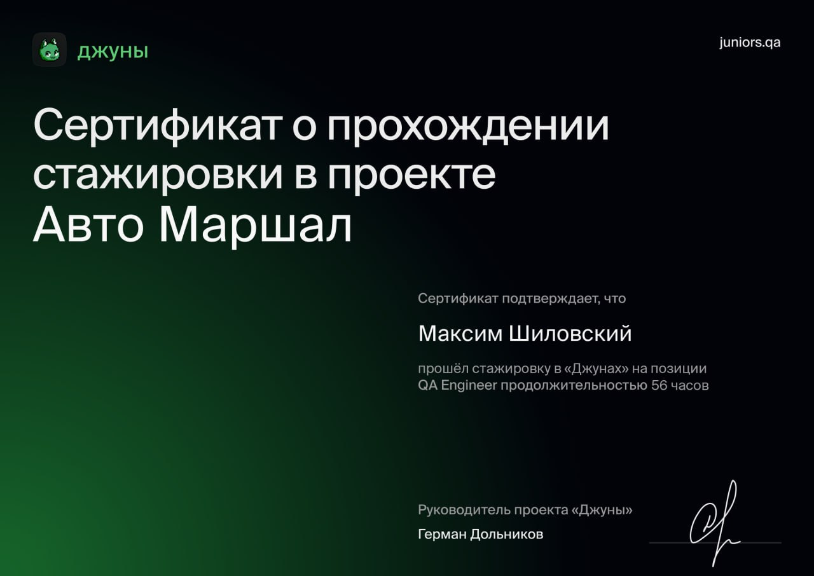
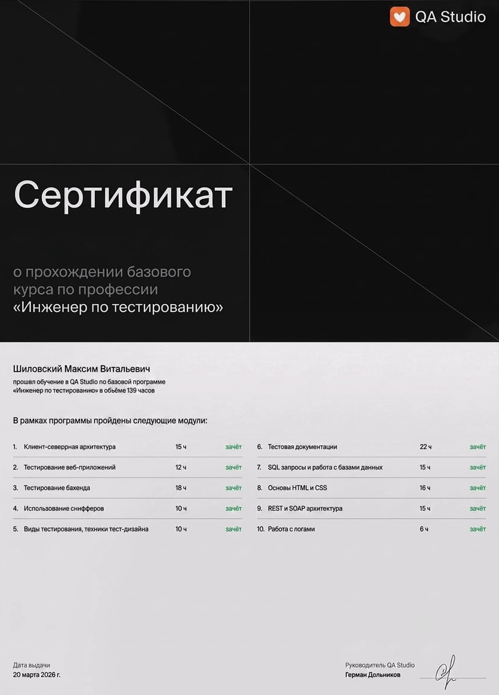
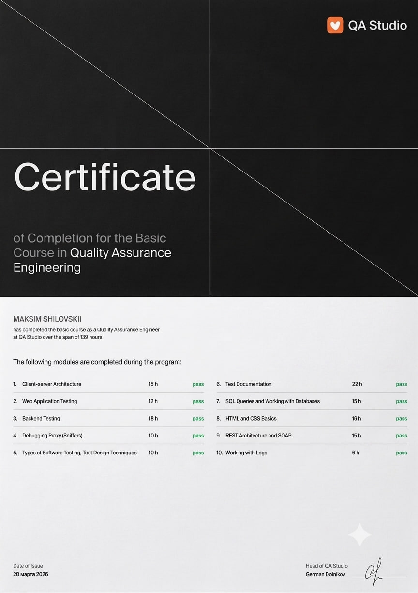

Максим Шиловский
Сертифицированный специалист по ручному и автоматизированному тестированию веб- и бэкенд-приложений. Вошёл в шорт-лист лучших выпускников своего потока в QA Studio. Имею подтвержденный практический опыт стажировок в реальных проектах длительностью более 120 часов. Нацелен на обеспечение высокого качества программных продуктов через применение современных практик тест-дизайна.
Технологический стек & Инструменты
Опыт и стажировки
QA Engineer (Стажёр)
Проведение функционального и регрессионного тестирования интерфейсов и внутренних сервисов платформы. Взаимодействие с командой разработки.
QA Engineer (Стажёр)
Анализ требований, составление тестовых сценариев и чек-листов, локализация дефектов и составление баг-репортов.
Студент курса «Инженер по тестированию»
Интенсивное освоение клиент-серверной архитектуры, баз данных, тест-дизайна и API. Успешно сдал все 10 учебных модулей на "зачёт / pass".
Подтверждающие документы




